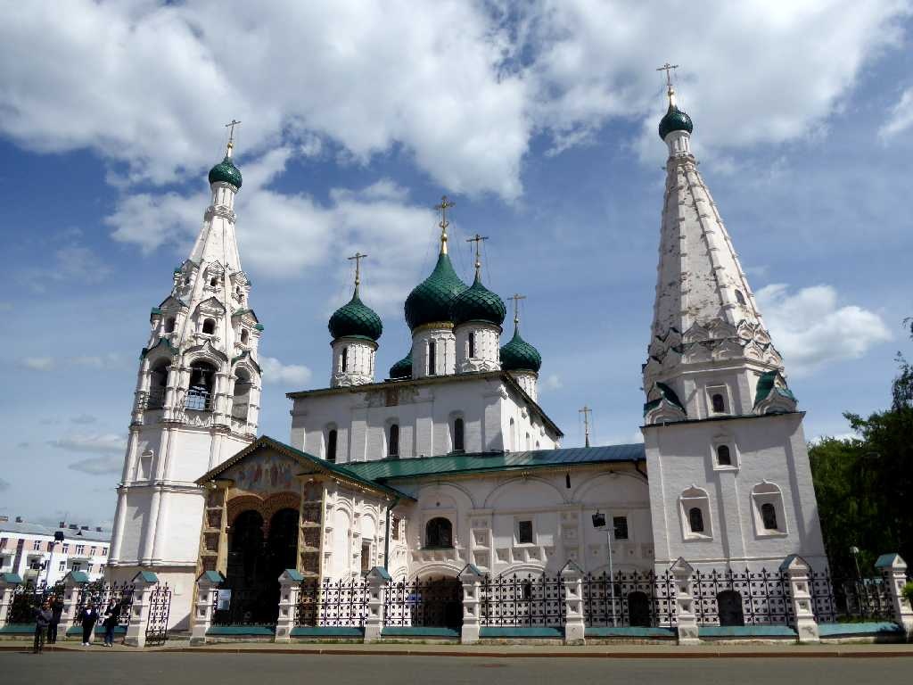
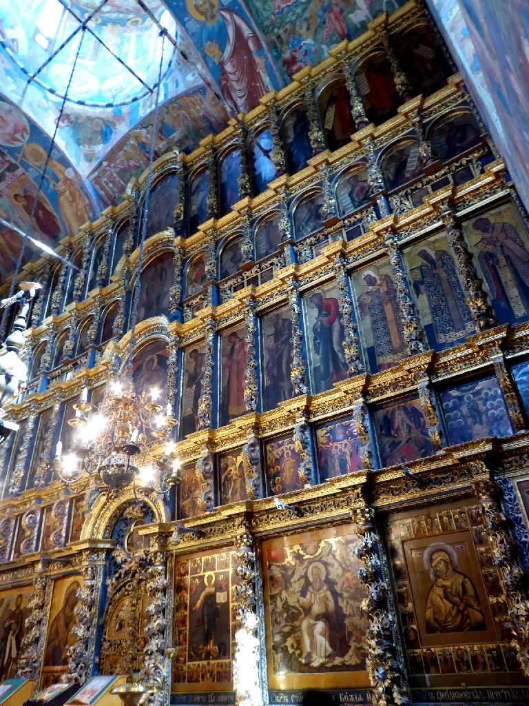
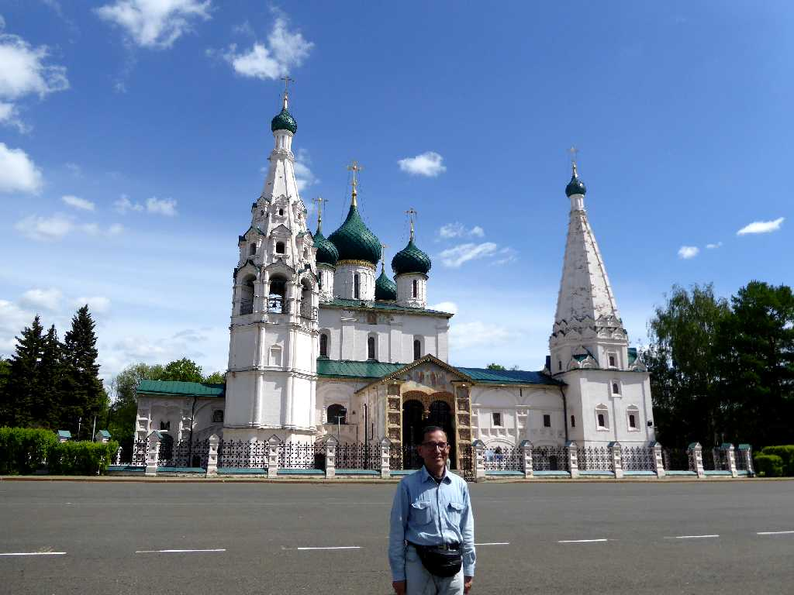

Church of Elijah the Prophet Yaroslavl
１６５０年裕福な毛皮商人により作られたヤロスラヴリの預言者イリヤ聖堂

Altar Church of Elijah the Prophet
預言者イリヤ聖堂の美しい祭壇には字が読めない人のために主に預言者イリヤについて聖書にある内容を描いたもので１７世紀の民衆生活の百科事典とも云われている

June 5 2017 Yaroslavl